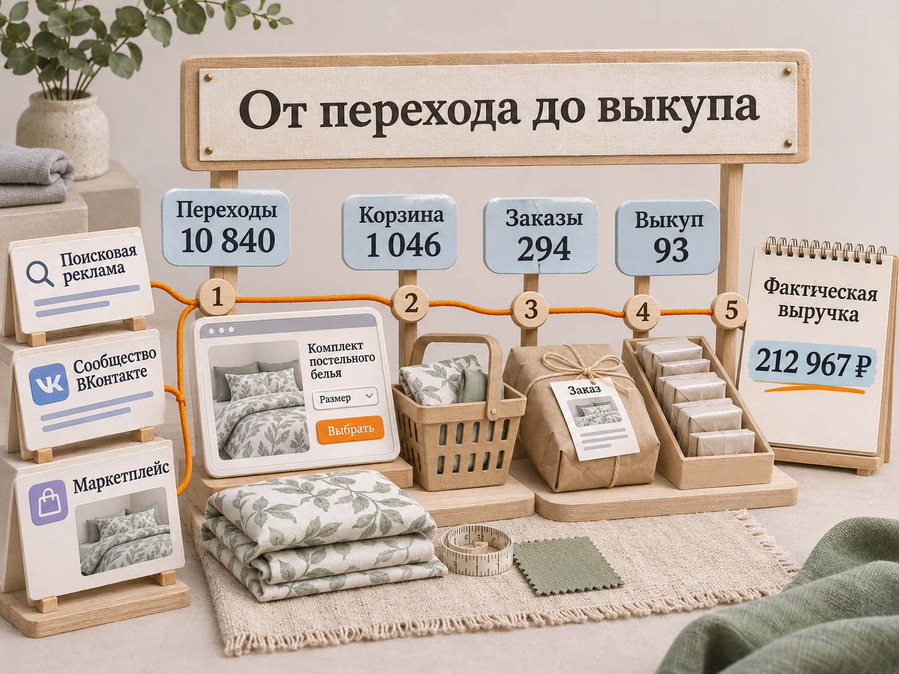
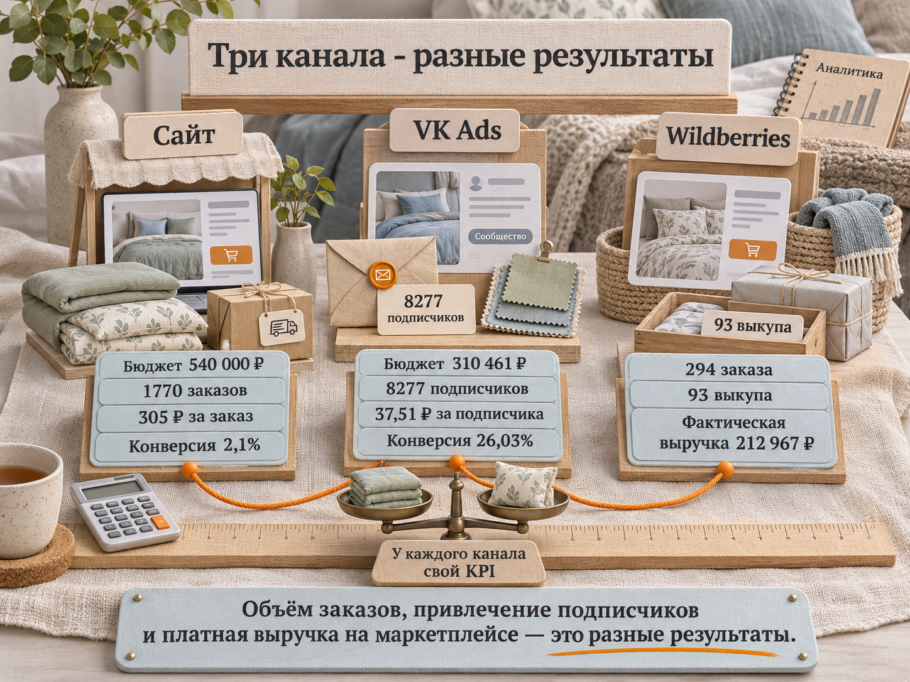

Блог о платном трафике
Продвижение интернет-магазина постельного белья: реклама, каналы и прогноз на 2026 год
Продвижение интернет-магазина постельного белья начинается не с выбора рекламной площадки, а с расчёта экономики заказа. В этой статье разберу открытые кейсы домашнего текстиля, покажу бюджеты, стоимость лида и заказа, объясню роль Яндекс Директа и соберу рабочую схему каналов на 2026 год.
Главный вывод простой: реклама интернет-магазина постельного белья может окупаться при среднем чеке около 5000 ₽, но только если магазин умеет считать не клики, а прибыльные заказы, выкупы и повторные покупки.
Как устроена воронка магазина постельного белья
Покупатель редко принимает решение только по цене. Он сравнивает состав ткани, плотность, размер, оттенок, фотографии, отзывы, условия доставки и возможность возврата. Поэтому путь от показа до денег нужно разбивать на отдельные этапы.
- Переход на сайт, карточку товара или витрину маркетплейса.
- Просмотр товара и выбор комплекта.
- Добавление в корзину или обращение в чат.
- Оформление заказа.
- Выкуп после получения и проверки товара.
- Повторная покупка, подарок или рекомендация.
Для собственного сайта полезно передавать в аналитику просмотр товара, добавление в корзину, оформление заказа, доход и идентификатор заказа. В Яндекс Метрике это позволяет видеть не только конверсию, но и путь к покупке. Подробно о такой настройке я писал в статье про Ecommerce в Яндекс Метрике.

Какие показатели считать до запуска рекламы
У магазина постельного белья несколько товарных групп и разная маржинальность. Комплект из сатина, пододеяльник, плед и подарочный набор могут иметь одинаковый рекламный бюджет, но разный допустимый CPO.
| Показатель | Как считать | Зачем нужен |
|---|---|---|
| CTR | Клики / показы | Понимать реакцию на объявление и предложение |
| Конверсия в корзину | Корзины / визиты | Оценивать карточку и ассортимент |
| CPO | Рекламные расходы / заказы | Сравнивать стоимость привлечения заказа |
| CAC | Все расходы на маркетинг и продажи / новые покупатели | Считать стоимость покупателя, а не одного заказа |
| ДРР | Реклама / выручка × 100% | Понимать долю рекламы в обороте |
| ROMI | Маржинальный результат от рекламы / расходы × 100% | Оценивать окупаемость с учётом расходов |
| Выкуп | Выкупленные заказы / оформленные заказы | Не путать заказ в системе с реальной продажей |
Если магазин продаёт только конечным покупателям, «стоимость договора» не является главным показателем. Этот термин уместен для оптовых или корпоративных заказов. В рознице важнее стоимость оплаченного заказа, прибыль с первой покупки, доля возвратов и повторная выручка.
Что проверить до запуска рекламы интернет-магазина
Реклама не компенсирует слабую карточку товара. До запуска нужно проверить базовые условия, которые влияют на конверсию сильнее, чем очередная настройка аудитории.
- Есть ли отдельные страницы под размеры, ткани, коллекции и подарочные наборы.
- Понятно ли, что входит в комплект, какова плотность ткани и как ухаживать за изделием.
- Показывают ли фотографии фактуру ткани, оттенок при дневном свете и реальный масштаб.
- Указаны ли сроки доставки, способы оплаты, возврат и наличие на складе.
- Могут ли менеджеры быстро ответить на вопрос о размере, комплектации и сочетании цветов.
- Передаётся ли в Метрику заказ, сумма, товар и источник перехода.
Для запуска рекламы интернет-магазина постельного белья я бы выделил не весь каталог, а одну или две группы с понятной маржой, стабильным наличием и достаточным количеством отзывов.
Что показывают открытые кейсы домашнего текстиля
Открытые кейсы полезны не как обещание результата, а как набор проверяемых ориентиров. У них разные продукты, площадки и модели атрибуции. Поэтому сравнивать их можно только вместе с оговорками.
| Кейс | Период и бюджет | Что опубликовано | Ограничение |
|---|---|---|---|
| T4ka, домашний текстиль и шторы | Январь-июнь 2025, 540 000 ₽ | 84 000 кликов, 1770 заказов, 305 ₽ за заказ, конверсия 2,1%, средний чек 4900 ₽, выручка 8,67 млн ₽, ДРР 6,2%, ROMI 1505% | Это кейс одного проекта с собственной рекламной моделью и ассортиментом |
| Магазин постельного белья, Facebook и Instagram | 8 месяцев, 1 568 788 ₽ | 3552 лида, около 442 ₽ за лид, средний чек 5000 ₽, выручка 16 131 180 ₽, ROMI 928,29% | Конверсия из лида в продажу и точная дата публикации не раскрыты |
| Wildberries, товары для дома | Период не указан | 10 840 переходов, 1046 корзин, 294 заказа, сумма заказов 671 955 ₽, 93 выкупа, фактическая выручка 212 967 ₽ | Бюджет рекламы и CAC не опубликованы; в описании есть расхождение по проценту выкупа |
| Lesela, премиальный домашний текстиль | Период не указан, 9 недель наблюдения | 340 диалогов, конверсия обращения в покупку выросла с 24% до 41%, средний чек с 12 000 ₽ до 15 400 ₽, дополнительно 1 200 000 ₽ выручки за 2 месяца | Бюджет рекламы и стоимость лида не раскрыты |
| Магазин тканей, VK Ads | Июль-ноябрь 2024, 310 461 ₽ | 8277 подписчиков рассылки, 37,51 ₽ за подписчика, конверсия подписки 26,03%, средний чек 2500 ₽, за 4 месяца заказы выросли на 32%, выручка на 21% | В публикации нет полной сквозной атрибуции подписчика в покупателя |

Как правильно читать эти цифры
Кейс T4ka показывает сильную экономику рекламного трафика: 305 ₽ за заказ при среднем чеке 4900 ₽. Но этот показатель нельзя переносить на любой магазин. В нём не видны маржинальность отдельных товаров, доля брендового спроса, возвраты и повторные покупки.
Кейс с постельным бельём показывает стоимость лида около 442 ₽, но лидом могла быть переписка или заявка, а не оплаченный заказ. Поэтому без конверсии лида в продажу стоимость покупки посчитать нельзя.
Данные Wildberries особенно наглядны: из 294 заказов опубликовано 93 выкупа, а фактическая выручка заметно ниже суммы оформленных заказов. В описании кейса заявлен выкуп 36%, но арифметика 93 из 294 даёт около 31,6%. Это хороший пример, почему цифры нужно проверять по первичным отчётам, а не только по заголовку кейса.
Как использовать Яндекс Директ для магазина постельного белья
Яндекс Директ подходит для перехвата сформированного спроса и для возврата пользователей, которые уже смотрели товары. Для первого запуска я бы разделил кампании по намерению, товарной группе и типу страницы.
- Поиск. Запросы с размером, тканью, комплектом, цветом и назначением ведут на соответствующие категории или карточки.
- Товарные объявления. Каталог и фид помогают показывать товар с ценой, фотографией и доступностью.
- РСЯ. Используется для расширения охвата, повторного контакта и тестирования визуальных предложений.
- Ретаргетинг. Отдельные сегменты нужны для брошенной корзины, просмотра карточки и покупателей, которым можно предложить комплект или повторную покупку.
- Брендовые кампании. Их следует считать отдельно, чтобы не смешивать собственный спрос и дополнительный эффект рекламы.
Пошаговую логику запуска для магазина с товарами я разбирал в материале про Яндекс Директ для интернет-магазина. В нише постельного белья к ней нужно добавить товарные признаки: размер, состав, плотность, цвет, сезонность и комплектность.
На старте не стоит передавать алгоритму десятки разнородных целей. Основным событием должна быть подтверждённая покупка, а корзина и просмотр товара нужны как диагностические сигналы.
Какие каналы использовать кроме Яндекс Директа
Реклама интернет-магазина постельного белья не должна зависеть от одной платформы. Каналы выполняют разные роли: одни приводят горячий спрос, другие формируют доверие, третьи возвращают покупателя.
- Wildberries и Ozon. Подходят для дополнительного охвата и проверки спроса на отдельные комплекты. Важно считать не только заказы, но и выкуп, комиссию, логистику, возвраты и маржу.
- VK Ads. Подходит для визуальных подборок, подписки на рассылку, ретаргетинга и продвижения коллекций. Подписчик не равен покупателю, поэтому нужна связка с заказами.
- SEO. Создавайте категории под размеры и материалы, страницы под конкретные вопросы и полезные статьи о выборе белья. SEO даёт накопительный трафик, но требует качества карточек и времени.
- Telegram и тематические сообщества. Используйте подборки, советы по сочетанию цветов, акции на комплекты и честные обзоры. Для каждого размещения нужны отдельные метки.
- Контент и UGC. Фотографии покупателей, видео фактуры и демонстрация комплекта на кровати снижают неопределённость перед покупкой.
- CRM. Сегментируйте покупателей по товару, размеру и давности заказа. Напоминайте о повторной покупке, дополняйте комплект и возвращайте тех, кто оставил корзину.
Отдельно полезно сравнить собственный сайт и маркетплейсы по роли в воронке. Маркетплейс даёт доверие и готовую инфраструктуру, сайт сохраняет данные о клиенте и позволяет развивать повторные продажи.
Как посчитать бюджет до запуска
Ниже не рыночная норма, а учебный расчёт для проверки логики. В нём средний чек 5000 ₽ взят из открытого кейса магазина постельного белья, а бюджет, ДРР и CPO являются модельными предположениями.
| Параметр | Учебное значение | Комментарий |
|---|---|---|
| Средний чек | 5000 ₽ | Взято из открытого кейса, не является гарантией |
| Бюджет | 90 000 ₽ | Модельный тестовый бюджет |
| Допустимый ДРР | 15% | Модельное ограничение рекламных расходов |
| Допустимый CPO | 750 ₽ | 5000 ₽ × 15% |
| План заказов | 120 | 90 000 ₽ / 750 ₽ |
Формула выглядит так: бюджет / допустимый CPO = план заказов. Если магазин получает не заказы, а лиды, к расчёту добавляется конверсия лида в покупателя. Например, при CPO 750 ₽ и конверсии лида в заказ 20% допустимый CPL составит 150 ₽. Это модель, а не обещание результата.
Прогноз продвижения на 2026 год
Для нового магазина разумно планировать не одну красивую цифру, а три последовательных этапа.
| Этап | Работа | Что считать |
|---|---|---|
| Первые 30 дней | Одна товарная группа, поиск, товарные объявления, ретаргетинг и базовая аналитика | Клики, карточки, корзины, заказы, CPO, причины отказов |
| Дни 31-60 | Отключение слабых товаров, тест новых креативов, VK Ads и CRM-сегментов | Доля новых покупателей, CAC, повторные визиты, выкуп |
| Дни 61-90 | Расширение ассортимента, SEO-категории, маркетплейсы и контент | Маржинальный результат, ДРР, ROMI, повторная выручка |
Если учебная модель подтверждается, бюджет можно увеличивать постепенно. При фактическом CPO выше допустимого нужно сначала проверить маржу, карточку товара, качество трафика и выкуп. Масштабирование без этих проверок просто увеличит стоимость ошибки.
Ошибки, которые чаще всего мешают продвижению
- Считать лидом любой чат, не проверяя, дошёл ли он до заказа.
- Оценивать маркетплейс по оформленным заказам без учёта выкупа и возврата.
- Вести весь трафик на главную страницу вместо страницы конкретной коллекции.
- Запускать рекламу на товары без запаса, отзывов и понятного описания.
- Смешивать брендовый и общий спрос в одном отчёте.
- Считать ROMI по выручке без себестоимости, комиссии и логистики.
- Останавливать кампанию по нескольким дням без достаточного объёма данных.
- Не возвращать покупателей через CRM и повторные предложения.
Итог
Продвижение интернет-магазина постельного белья лучше строить вокруг связки «карточка товара - заказ - выкуп - повторная покупка». Яндекс Директ помогает перехватывать спрос, маркетплейсы расширяют охват, VK Ads и контент формируют интерес, SEO накапливает органический трафик, а CRM увеличивает ценность уже привлечённого клиента.
Открытые кейсы дают полезные ориентиры: от 305 ₽ за заказ и около 442 ₽ за лид до 37,51 ₽ за подписчика. Но переносить эти значения напрямую нельзя. Сначала нужно определить маржу, допустимый CPO, правила атрибуции и минимальный объём теста, затем принимать решения по фактической прибыли.